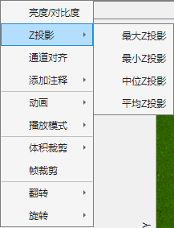
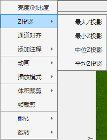

1.2.2 Z投影
 单击图像，选择Z投影，在弹出的菜单中选择一种投影方法。 常用最大强度投影(Maximum Intensity Projection, MIP ) 或其他。投影后片层滑块锁定，变为不可选中。投影方法变为选中状态。 再次单击对应投影方法，片层滑块解除锁定，投影方法变为取消选中状态，可以进行片层浏览。

单击图像，选择Z投影，在弹出的菜单中选择一种投影方法。
常用最大强度投影(Maximum Intensity Projection, MIP ) 或其他。投影后片层滑块锁定，变为不可选中。投影方法变为选中状态。
再次单击对应投影方法，片层滑块解除锁定，投影方法变为取消选中状态，可以进行片层浏览。